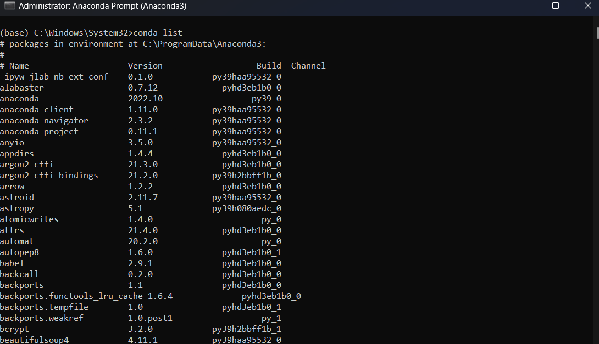
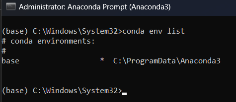
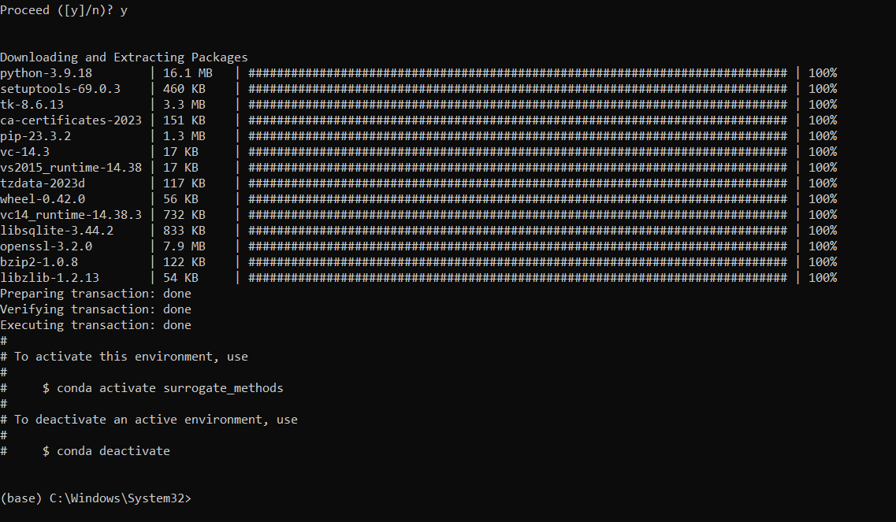
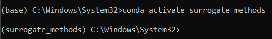

Computing environment setup#
The goal of this section is to create a computing environment on your computer for this class. Follow the steps below to setup anaconda, create an environment, and install some initial packages in the new environment. If you already have Anaconda or know any other method which suits your needs in a better manner, then you are free to use that. The end goal is to have a working computing environment for this class.
NOTE: This guide assumes that you are using Windows OS. If you are using another OS, then the steps will be very similar but there might be more usage of terminal commands.
Step 1: Downloading and installing anaconda#
You can skip this step if you already have Anaconda (or miniconda) installed.
Download anaconda from https://www.anaconda.com/.
Open the installer and follow the instructions.
For “Installation Type”, you can select “All Users” if you are installing it on your PC.
In “Advanced Installation Options”, no need to change anything. Stick to default selection.
Once installed, there are two ways to use Anaconda – Anaconda Prompt (a command line tool)
or Anaconda Navigator (GUI platform). Use whatever you are most comfortable with. To open
Anaconda Prompt or Navigator, simply search for it in the start menu. In this guide, Anaconda
Prompt will be used to demonstrate the creation of a computing environment. You can setup a
computing environment using Anaconda Navigator as well. Some useful tutorials for using the
Navigator can be found here. It is highly recommend
going through these tutorials if you choose to use Navigator to setup the environment.
Another alternative for creating a computing environment is to use miniconda which is a minimal installation of Anaconda containing only conda, Python and a few other useful packages such as pip. Instructions for installation of miniconda will not be covered in this guide and can be found here. If you want to know more, there is also a comparison between Anaconda and miniconda given here. In general, it is recommended to use Anaconda if you are new to conda or Python. If you have installed miniconda, it will also come with an Anaconda Prompt and a procedure like the one outlined in the below steps can be used to set up the computing environment.
Step 2: Creating a new environment#
Open the Anaconda Prompt. Make sure that you use the run as administrator option when opening Anaconda Prompt. You will see a black screen with a command prompt. You will also see
(base)written before the command prompt. When you installed anaconda, it created a base environment in which it installed several packages. By default, the base environment is activated when Anaconda is launched.
Type in
conda listand press enter to run this command. You will see the list of packages installed in the base environment.
It is recommended to create a new environment for each project to avoid package dependency issues. To check the existing environments, you can run:
conda env list.
It will show the list of environments and the active environment will have a “*” mark in front of it. If you just installed anaconda or never created an environment, then there will only be one environment called
base.To create a new env, run the command:
conda create -n ENVNAME python=3.9. Replace ENVNAME with whatever name you want to give to the new environment. Thepython=3.9after the environment name tells conda what version of python to install. We will be using python version 3.9 for this class.Once the environment is successfully created, you will see the following in the command prompt on your screen.

You can run conda env list again and see that your newly created env is there. For the example shown below, the name of the environment was set to surrogate_methods.

To activate the newly created env, run
conda activate ENVNAME. Replace ENVNAME with your chosen environment name. You will see that the(base)before the command prompt will change to theENVNAME.
If you run
conda listnow, then it will show the list of installed packages in the newly created environment. Note that the number of packages will be very less when compared to thebaseenvironment. You will have to install the packages as and when needed.
Step 3: Installing packages#
In this step, you will install some basic packages which you will need during the initial part of the class. You will install many other packages as the semester progresses.
Open Anaconda Prompt. Again, make sure that you use the run as administrator option when opening Anaconda Prompt. Activate the environment which you created in the last step.
NOTE:
pipwill be the main installer we will be using in this class. We will not be using conda to install any package. conda is just used as an environment manager.After activating the environment, you can run
pip listto see the packages installed using pip within the activated environment.NOTE: It is okay if your list is not exactly same as above.
Install Numpy (if it is not pre-installed) by running:
pip install numpy. If you want to install a specific version of a package, the version must be mentioned while running the pip command. This can be done by runningpip install numpy==1.23.5. There is no specific version for numpy in this class. After installing any package, always runpip listand see if the package is listed there or not, also check the version if you explicitly mentioned version while installing.Install SciPy by running:
pip install scipy.Install Matplotlib by running:
pip install matplotlib.Install Jupyter Notebook by running:
pip install notebook.NOTE: This will install a lot of dependencies that are required for Jupyter Notebook.
Jupyter Notebook is a computing platform that will be used extensively in this class. Now, your computing environment should be ready. In future, whenever you are asked to install a new package, you should install it using pip within this environment only.
Now, your computing environment should be ready. In future, whenever you are asked to install a new package, you should install it using pip within this environment only.